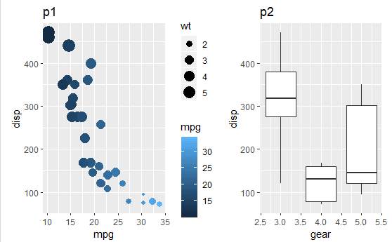
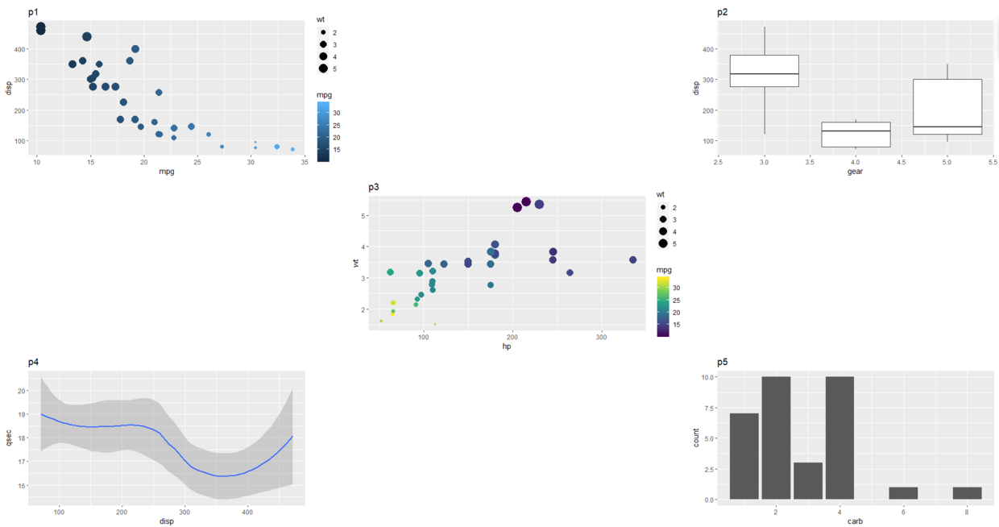
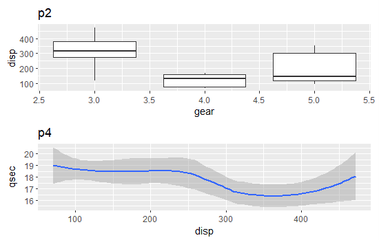
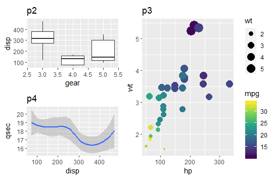
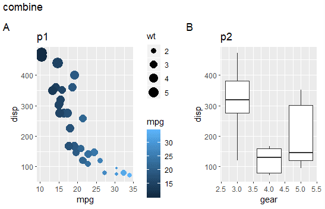
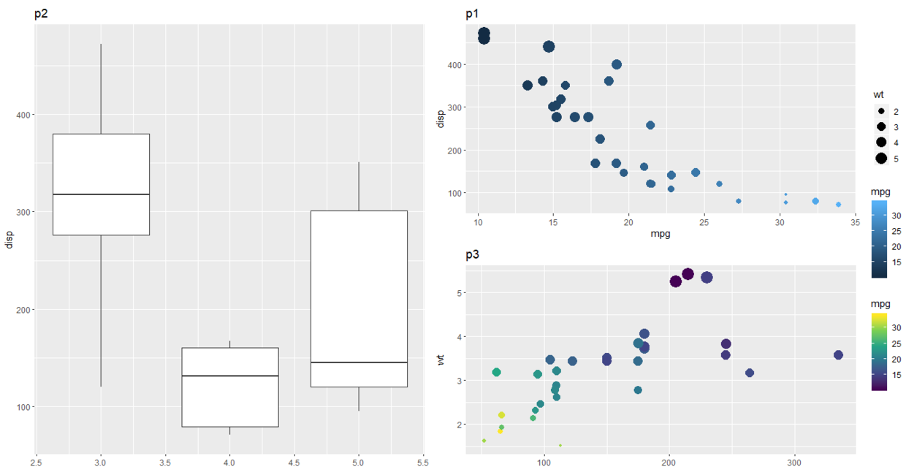
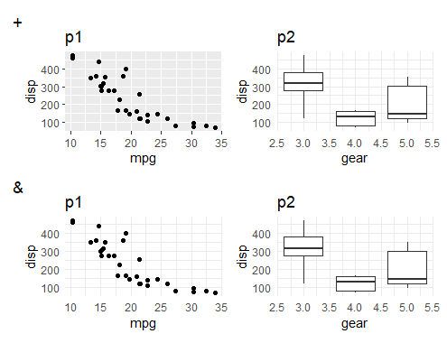
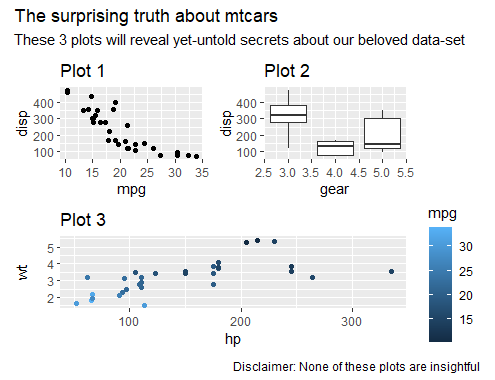
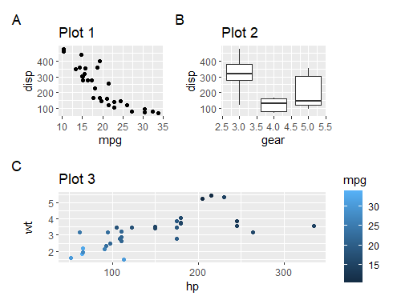
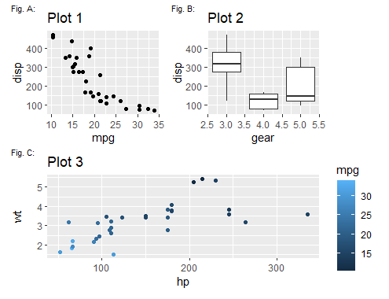

据patchwork的作者 Thomas Pedersen所介绍，他开发的初衷就是让ggplots的组合可以ridiculously simple！
The goal of
patchworkis to make it ridiculously simple to combine separate ggplots into the same graphic. As such it tries to solve the same problem asgridExtra::grid.arrange()andcowplot::plot_gridbut using an API that incites exploration and iteration.
我使用后的感觉也是如此， patchwork可读性高、操作简单、可操作性也高，真的太强了。下面简单介绍一下这个包吧！
安装
由于这个包还没发布到CRAN上，所以直接用install.packages()是安装不了的，要使用以下方法安装
devtools::install_github("thomasp85/patchwork")
更新于 2020-12-29
patchwork已经发布了有一段时间了，可以直接通过以下命令安装
当然也可以继续用
devtools::install_github("thomasp85/patchwork")的方法安装开发版本
语法
patchwork使用的语法十分简单，就是用+就可以按行将图拼起来，而/是按列拼图，使用|分隔后可以同时使用两种方法拼图。
下面我们画几张图试试
1 | p1 <- ggplot(mtcars) + |
横拼
可以通过+或|实现，两者都是按row合并的
1 | p1 + p2 |

还可以通过plot_spacer()在图与图之间插入空白，实现ggplot的九宫格！
1 | p1 + plot_spacer() + p2 + |

竖拼
竖着拼也很简单，就是一个/就完事了，有点分式的意思
1 | p2/p4 |

多种拼图的结合
如果想同时实现两种拼图的语法，用|即可完成了
1 | (p2/p4)|p3 |

方便的注释
patchwork还提供了一个plot_annotation的功能，可以允许我们在给拼起来的图加title的前提下，还能为每一个subplot加上一个tag，效果如下：
1 | p1 + p2 + plot_annotation(title = "combine", tag_levels = "A") |

这个功能在生成文章的figure的时候就很有用了
复杂的拼图
以上我们所做的都是在网格上一个个格子地拼图的，当然，patchwork也可以通过设定layout实现指定每个图所占的格子来拼，容许了更高的操作自由度
1 | layout <- " |

以上的#是空白，ABC就代表了输入中相应的图
控制legend
patchwork可以通过指定plot_layout(guide = 'collect')将legend都放到图的一侧
1 | (p2 | (p1/p3)) + plot_layout(guides = 'collect') |

有趣的是，尽管我们的mpglegend都是对mpg上色，但仅因为颜色映射的方法不一样，就分别列了出来。所以，这个guides = 'collect'不仅仅只是收集legend，它是在进行了legend的比较之后，才放出来的。
对拼图进行批量ggplot语法操作
patchwork还提供了&操作符，以让我们对拼接后的图的整体进行操作。
操作符+只对其接着的一个图进行修改，而&可以对所有图进行修改。
1 | patchwork <- (p1 + p2 + theme_minimal())/(p1 + p2 & theme_minimal()) |

与非ggplot对象拼接
目前，patchwork支持将ggplot与non-ggplot对象进行拼接。
ggplot + grobs
我们可以将grobs对象与ggplot对象进行拼接
1 | # adding non-ggplot object |

或者表格
1 | p1 + gridExtra::tableGrob(mtcars[1:10, c('mpg', 'disp')]) |

ggplot + base graphics
另外，我们也可以将ggplot与R的基础绘图对象进行拼接
1 | # base graphics |

但我们可以注意到ggplot与base graphics没办法很好的对齐。这时候我们需要手动调整base graphics的图形大小，使之对齐。
这里提一下patchwork对non-ggplot对象的拼接是通过wrap_elements()实现的。我们接下来对base graphics进行wrap_elements()操作后再修改
1 | # align ggplot with base graphics |

non-ggplot + ggplot
我们对non-ggplot的添加都是加在ggplot的右侧，可以把+理解为一个函数而它左侧接受的第一个参数需要是ggplot对象。所以如果我们需要添加non-ggplot对象在左侧时，要先用wrap_elements()将其转换。
1 | # first plot non-ggplot |

函数式拼图
有时候，当我们有一个列表存储多个图时，手动地用+一个个拼接会比较费劲。幸好patchwork提供了wrap_plots()这一函数以自动拼接多个图。
1 | # functional assembly |

有了wrap_plots()当我们用函数批量生成图时，也可以一次拼接起所有的图了。
注释
接下来，再简单介绍patchwork的注释系统.
我们可以通过plot_annotation()对拼接后的图添加注释
1 | patchwork <- (p1 + p2) / p3 |

通常在文章的图里，我们会用字母表示不同的panels，使用plot_annotation也可以很方便地实现对拼图的标注
1 | patchwork + plot_annotation(tag_levels = 'A') |

或者更复杂的标注
1 | patchwork + |

总而言之，patchwork是个十分方便且强大的ggplot拼图工具。本文也只是简单介绍它，还有更多有趣的使用方法等待大家发现！
Ref：
完。